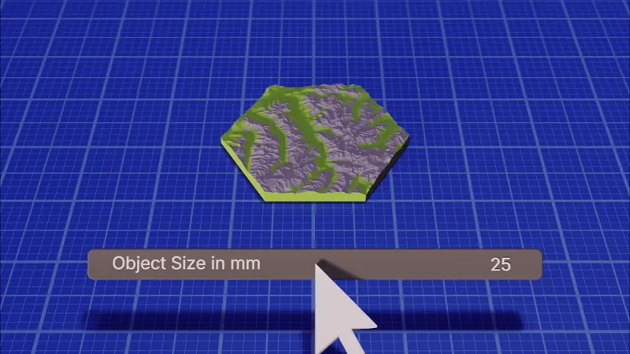
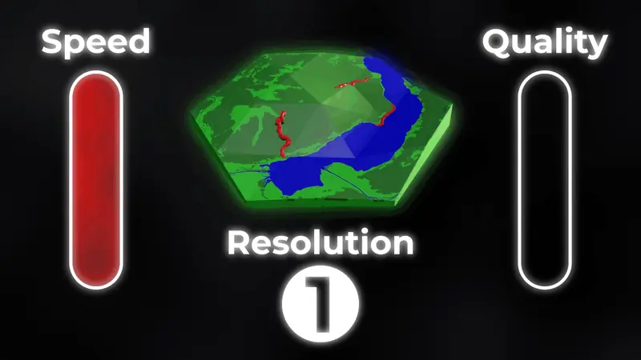
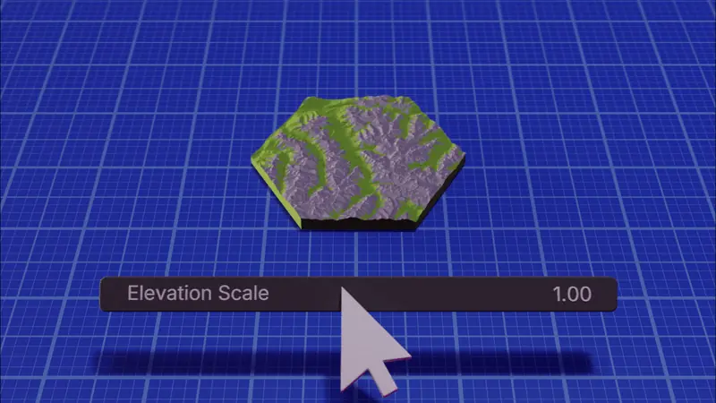
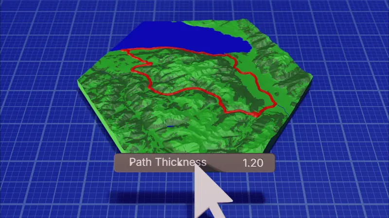
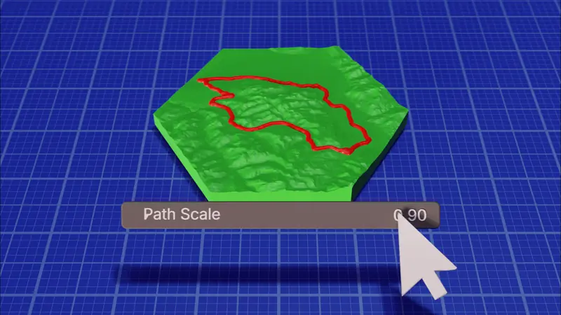
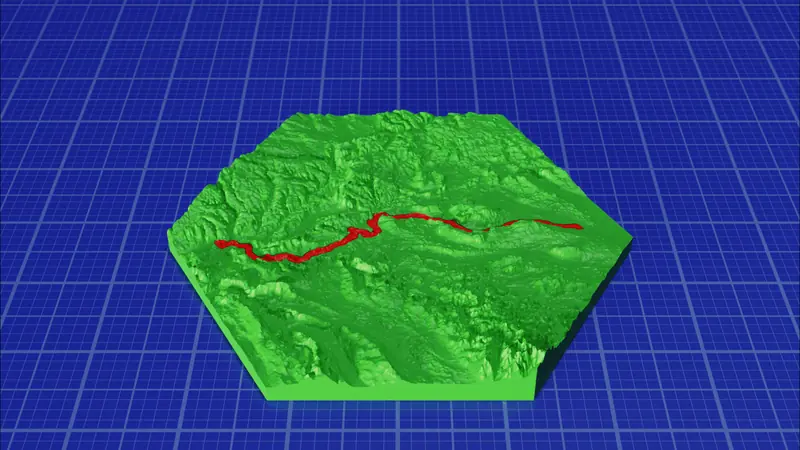

Download Blender from blender.org (Version 5.1 or higher)
Download the Latest version of the Addon
Open Blender and go to Edit → Preferences → Add-ons
Popup opens. Go to Add-ons, click on the arrow on the top right, "Install from disk" and select the Addon you downloaded
TrailPrint3D can update itself — open Edit → Preferences → Add-ons → TrailPrint3D and click Check for Updates whenever a new version comes out, no need to redownload manually
Getting your GPX File
▼
Open the activity tracking app where your route is saved (e.g. Strava, Komoot, Garmin Connect, AllTrails)
Navigate to the activity or route you want to turn into a 3D map
Look for an Export or Download option. usually in the activity's settings or three-dot menu
Select Export GPX and save the .gpx file to your computer
▶ VIDEOBasic Map Generation
▼
Inside blender, the TrailPrint3D panel is located in the 3D Viewport sidebar
Press N to toggle the sidebar open, then click the TrailPrint3D tab
Click the folder icon next to File Path and select your .gpx file
Set an Export Path. this is the folder where your files will be saved after generation
Adjust the settings to your liking (see the sections below for details on each setting)
Click Generate and wait for the process to complete. generation time depends on resolution and map complexity
Once done, your files will appear in the export folder, ready to open in your slicer
GIFMap Shape & Size
▼
Use the Shape dropdown to choose the outline of your map. options include hexagon, square, circle, and more
Set the Object Size in millimeters. this is the physical size of the final printed map (e.g. 100 = 100 mm)

The map is automatically scaled and centered around your route regardless of the shape chosen
GIFResolution & Quality
▼
The Resolution setting controls the detail level of the terrain mesh. higher values produce more precise elevation detail

INFO!: Resolution only affects the Terrain mesh. it has no effect on the detail of Elements like Forests or Water
Recommended range: 6–8 for a good balance between quality and generation time
Lower values (4–5) are useful for quick previews before committing to a final render
A resolution of 7 can take longer to generate so be patient and do not close Blender while it runs
For most prints, a value of 7 is sufficient and generates in a reasonable time
Exporting files
▼
After Generating a Map, Files are exported automatically to your Export folder
INFO: in the Addon preferences you can set a Default export path so you don't have to specify it each time
If you do any mannual changes or post-processing features you have to export it manually in the Advanced -> Export tab
There are 3 Diffrent File export options available
STL: Exports each object as a STL file. You have to color them manually in your slicer as STL files dont contain Color information
.OBJ: Exports each object as a .OBJ file. This format contains color information and is needed if you painted the elements onto the map
It also comes with a .MTL file. dont separate these two files. the .MTL file holds the color data
.3mf Exports all objects as a single .3mf file. It contains color data, relative position and it automatically grouped
It requires the 3mf Addon by Clonephaze. you can install it directly from the Export tab and once installed its the Default export option
Import to Slicer
▼
Import the exported file(s) from your export folder
STL: Select all STL files together. The slicer will ask you if you want to view those files as a single object. Hit yes. otherwise they wont have the correct position to each other
.OBJ: Same as STL. additionally, a window will popup allowing you to assing filaments to the colors
.3mf: Import the single .3mf file — colors and grouping are all preserved automatically. The groups are overlapping so rearrange them
Info: Set the Wall-generator in your slicer to Arachne for better results when printing in multiple colors (less gaps between them)
▶ VIDEOImprove Slicing Result
▼
Change the Wall Generator from Classic to Arachne and the Min Feature Size to 1%
→ Improves quality of details and print fine details like rivers
Text-Based Shapes & Customization
▼
Some shapes double as backplates for engraved text: Hexagon (inner, outer, or front text) and Octagon (outer text)
Add a title plus up to 5 icon + text rows. handy for a route name, distance, elevation gain, or date
Choose a Font and set the title and body Text Size independently
Fine-tune the plate with Thickness, Outer Border Size, Insert Value, Bevel, and a Text Angle preset
Found in the Additional Shape Settings panel, only shown when a text-based shape is selected
GIFElevation Scale & Path Settings
▼
Elevation Scale is a multiplier applied to the real-world elevation data:
Increase it for flat routes (e.g. coastal or city rides) to make the terrain more visually interesting
Decrease it for very steep or alpine routes to prevent extreme height differences that are hard to print
A value of 1.0 represents true-to-life proportions

Path Thickness controls the thickness of the route line on the map surface

Path Scale sets the scale of the path relative to the object size.)/li>

e.g. 1 = Trail is as big as the map. 0.5 = Trail is about half the size of the map and shows more of the terrain around it
Elevation Data Sources & API Key
▼
TrailPrint3D can pull elevation data from several sources, switchable in Advanced → API: Mapterhorn (default, no setup required), Terrain-Tiles, OpenTopoData, Open-Elevation, and OpenTopography
OpenTopography requires a free API key from portal.opentopography.org — without it, most datasets will fail to fetch. Set the key once in Edit → Preferences → Add-ons → TrailPrint3D → OpenTopography API Key
If using OpenTopoData, pick the Dataset that best matches your region for more accurate elevation
Elevation and map data both require an internet connection — if generation fails, check your connection or try a different data source
If you see random holes in your terrain mesh, try enabling disableCache or clearing the cache with Clear Cache
Map Elements (Water, Forests, Cities)
▼
TrailPrint3D automatically fetches map data from OpenStreetMap to generate environmental elements around your route
Water: lakes, rivers, and other bodies of water are generated as raised or recessed areas on the map
Forests: wooded areas are included as a distinct surface layer
Cities & Settlements: urban areas are represented on the map
Scree, Glaciers, Farmland & Greenspaces: also generated automatically, each toggleable individually with its own area/size setting
Buildings(3D, Experimental): extrudes building footprints to a configurable height
Roads: choose which tiers to include (major, medium, small streets) and control their width and height
Element generation works best in well-mapped regions.remote or rural areas may have less OSM data available
You can select from 3 ways to handle the Elements:
PaintOnMap: Paints the elements directly onto the map surface. Quality is depending on the Map resolution
SeparateObjects: Exports each element as a separate file
SingleColorMode: Generates each element as a separate file with cutouts in the map so you can print each object separately and assemble them afterwards
INFO!: If the map gets too big some elements may no longer work. for a map that covers 100km its too much for the API and for blender to fetch every single forest structure
GIFSingle Color Mode
▼
There are 2 diffrent options for the SingleColorMode. one for the Trail and one for the Elements
You can enable the SingleColorMode for the Trail and still choose to paint the elements onto the map

You can set the Tolerance for the SingleColorMode in the advanced options -> Map. (Default for Trail: 0.2, Default for Elements: 0.4)
INFO!: Buildings and Roads are not compatible with SingleColorMode currenlty
Contour Lines
▼
Contour lines trace elevation bands across the terrain, similar to a traditional topographic map
Enable them in the Advanced Options -> Post-processing
Contour Line Thickness: Controls the thickness of the line in mm
Distance: Distance between two lines, in real-world meters
Offset: Starting height of the lines, in real-world meters
Use Real-World Meters: Toggle between real-world meter inputs and local model mm values
Select your map and then click on "Add Contour Lines". After that manually export the Contour line object
More Post-Processing Tools
▼
All of these are found in Advanced → Post-processing and must be exported manually afterward. they're not part of the automatic export
Color Mountains: automatically colors the terrain by elevation threshold, useful before exporting for multi-color prints
Magnet Holes: drills holes sized for your own magnets (set Height and Diameter), handy for multi-tile maps or removable pieces
Dovetail Cutouts: adds interlocking dovetail joints along tile edges, useful when printing a map across multiple tiles
Bottom Mark: engraves a small mark into the bottom face of the map, useful for labeling tiles
Pin Placement
▼
Place Pin adds a small pin marker at a specific GPS coordinate on your map
Found in Advanced → Pin
Premium: Pin on City lets you drop a pin by typing a city name instead of coordinates
SVG & Text Import
▼
Import a custom SVG outline (e.g. a logo or icon) directly onto your map as a 3D object
Place custom 3D Text anywhere on the map. for example a title, date, or distance
Found in Advanced → Post-processing → SVG / Text Import
Click the ? icon next to the section for a short video walkthrough
Presets
▼
Save your current settings as a named preset so you can reuse them for future maps
Found in Advanced → Presets
Load, save, or delete presets from the dropdown
PREMIUM2D Heightmap Import
▼
Import a 2D grayscale image and use it directly as a heightmap for the terrain
Useful for custom or fictional terrain that isn't tied to real-world GPS data
Found in Advanced → Post-processing → Import 2D Heightmap
PREMIUMMulti-Generation
▼
Multi-Generation allows you to load multiple GPX files and combine them into a single map
Click the folder icon and then select a Folder that contains all the .GPX files you want to put onto the map
Perfect for multi-day hikes, a season of rides, or any collection of routes in the same area
Compatible with the SingleColorMode
PREMIUMTerrain Mode & Custom Maps
▼
Terrain mode generates a map that isn't tied to a GPX trail. useful for custom regional maps
Switch to it with the mode toggle at the top of the Create panel
Three ways to define the area: Center + Radius (pick a coordinate and radius), 2 Corner Points (two lat/lon corners), or From Blank (create an empty tile, then Extend Selected Tile to grow it)
Use the Multi Tile Configurator to lay out and generate several tiles at once
Use Merge with Map to combine a GPX trail into an existing custom map, or Generate Just Trail to add only the path
Great for building city, region, or country-scale maps piece by piece
FREEMap Puzzles
▼
Create Jigsaw puzzles of every Location
User Friendly Interactive 2D Map Selection
Found here: Advanced -> Special -> Puzzle Generator
Click the little Pencil icon and draw your selection, Set a few parameters and click "Send to Blender"